CISCO Router Configuring remote terminal access for TELNET
Before we configure telnet access to our router, please be aware that in most circumstances this is not a good idea. It is always advised to use a secure method of remote administration such as Secure Socket Shell (SSH) - please see my other guide on how to set this up. Security is telnet's key weakness - it transmits and receives all messages in cleartext! However, there are some instances when telnet can be useful, for initial setup and configuration, for example.
Lab setup
- GNS3 as the network emulation software.
- 2 PCs (Linux and Windows10).
- A layer 2 switch (Switch).
- A CISCO router on IOSv 15.7 (Router - Cisco Modelling Labs Personal $199).
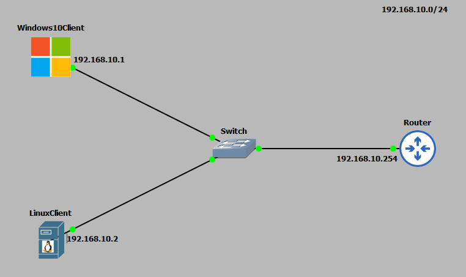
IP Schema
The IP schema for this lab will be 192.168.10.0/24. This will give us 254 useable addresses (256 - broadcast address - network address). The subnet mask will be 255.255.255.0. All the devices will be statically allocated IP addresses as no DHCP service is running on the router. The IP addresses used are seen in the topology diagram above.Lab configuration
First, I will IP address the router interface and 2x client PCs: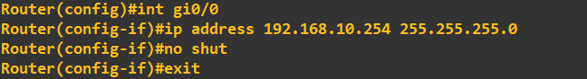
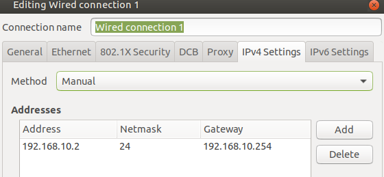
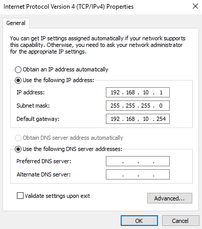
Let us perform a quick ping check from my Windows10 client to the router interface. This is just to ensure connectivity.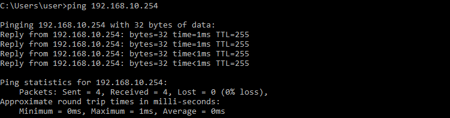
Great, we are now ready to configure our telnet lines on the router.Configuring remote access through telnet
CISCO routers utilise a number of virtual lines (vty) that we can configure for certain accesses (SSH and telnet). We will use 5 of these (16 in total), this means we are allowing 5 simultaneous telnet connections.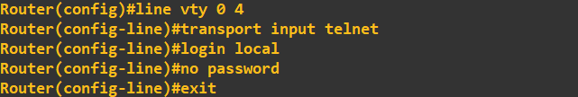
In the above screenshot, I first accessed lines 0 to 4, set the transport method for these lines to telnet, set the login authentication to local (local database of users on this router) and removed any legacy telnet passwords that may have been set. As I have specified the local user database for authentication, I now need to add a user: This has created a user with the username 'slashroot' and the password 'example'. It has also specified that this user has highest privilege level (15) and that the password should be stored on the router using the scrypt algorithm. Part of the command has been cut off by my console, here is the full command:username slashroot privilege 15 algorithm-type scrypt secret exampleTo emphasize what the algorithm-type parameter has done, you can check the 'show running config' and see the hashed password using the type 9 algorithm (scrypt):
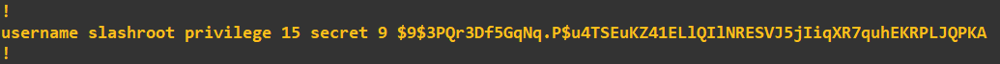
At this stage everything is ready to go. All we need to do now is test access with a telnet client. I am going to do this using the built in telnet client on my Linux client first: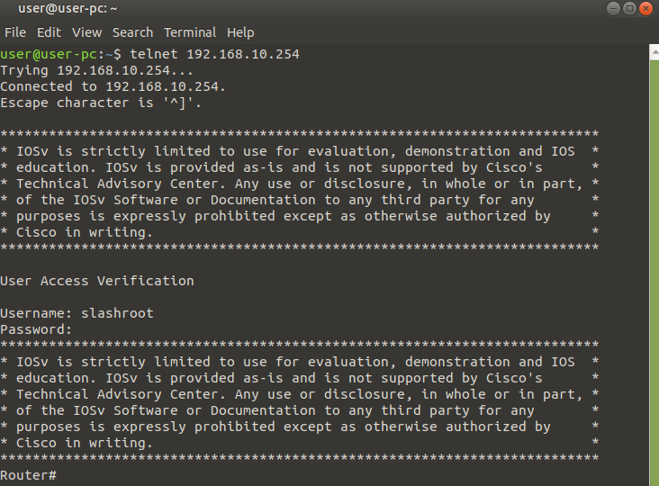
On my Windows10 client I have installed PuTTY as remote access client: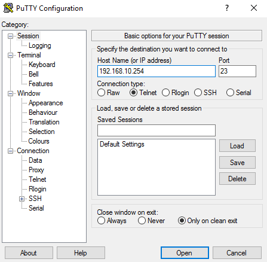
If you are using PuTTY as a telnet client, ensure you select 'Telnet' and the port is set to '23'.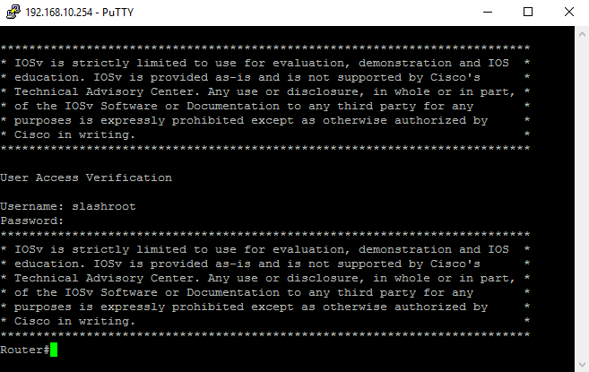
In both cases you can clearly see I authenticated with the 'slashroot' account and connected successfully. When running commends in these sessions you may also notice status messages appearing on your router: This will also show the remote IP address as in the above screenshot.Locking telnet access down to a certain IP
If you are using telnet you may want to lockdown this access to a certain IP. For example, giving access to an administrator machine only. This is relatively easy to implement using an Access Control List (ACL) and applying it to the vty lines we are using.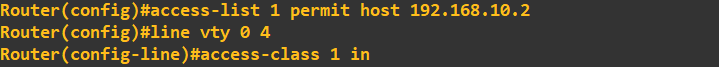
In my design, I want to give access to the Linux client only (192.168.10.2) and thus block telnet access from the Windows10 client. First I create an ACL which permits host IP 192.168.10.2. I then access the vty lines 0 to 4 and apply the ACL for any connections coming into these lines. To test this, I now try to connect from both clients: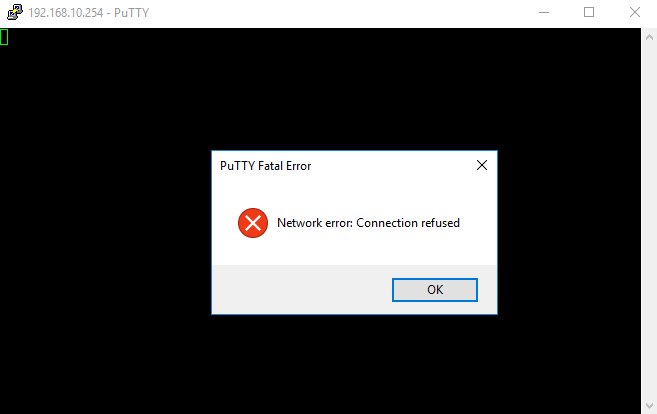
As expected, my Linux client can connect, with my Windows10 client being refused connectivity.Security concerns
As I mentioned at the very start, one of the key security issues with telnet is that it operates in the clear i.e. all its messages transmitted or received are clearly visible to anyone snooping the network. To demonstrate this I have removed the ACL from the vty lines and captured the traffic on the Windows10 client to router line using Wireshark. I have then logged into the router using telnet: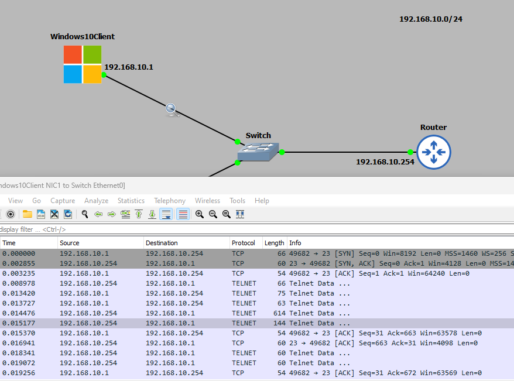
I have now followed the TCP stream in Wireshark: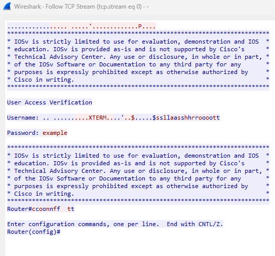
Worringly, but as expected, you can see all of the traffic in cleartext. You could easily now record my username and password and access the device.